Pre-op¶
Note
To install DBS Guide, visit the installation tutorial.
Two to three weeks prior to the surgery, the patient gets an MRI Scan along with several sequences. Among the sequences is a 3D Volumetric Stealth MRI. Using the Registration Widget, we can co-register the MRI scans with the 3D Volumetric Stealth MRI.
- Load the patient’s directory.
Click
Browseto find your folder with the scans. Notice, we only select the folder and not the files inside the folder. This folder contains folders in the .nii.gz format which means each folder is a gzipped folder of NIFTI (Neuroinformatics Technology Initiative) files. NIFTI files are files of MRI scans.
Note
- There are two folders now in your patient directory:
- scene
Contains data/scans that will be edited by DBS Guide
- source
Contains the original brain scans
- Rename volumes [optional].
If you would like to rename volumes you may do so.

Note
Frame Detectionis going to be skipped because the CT frame scan is performed on the day of the surgery.Frame Detectionwill be explored in the next phase,intra-op.
- Co-register the 3D Volumetric Stealth MRI with the other MRI scans.
Using
Registration, select the appropraite reference volume, which in our case is3D Stealt. LeaveCT Frame VolumeasNonebecause the frame CT has not been obtained yet. Choose the algorithm of your preference. ThenRun Registration.Note, this may take a while (upto 10 minutes). If your computer freezes, just wait, the program is still running.Upon completion:
- Confirm that the registration was a success.
We want to make sure the the co-registered scan matches
3D Stealth. We will use the views on the right to do this. First link all the views so that they’re in sync as you zoom in and out.
Next, we’ll need to set the background view to 3D Stealth and foreground view the co-registered scan.

Note
Any scan that ends with
coreghas been coregistered.To confirm that coregistration is successful, use the slider to transition from background and foreground. As seen below, the scans have coregistered successfully.
Note
- Quick controls for Slicer
- Slide image
Hold Shift and drag
- Move through scan according to axis (e.g. Anterior to Posterior)
Scroll up/down
- Increase size of image
Hold right-click and drag

- Plot the anatomical fiducials.
- There are four points that need to be marked.
Anterior Comissure (AC)
Posterior Comissure (PC)
Two midline points (Mid1 and Mid2)
Select
3D Stealthas your fiducial volume.Note
To adjust the the brightness of the window and level of volume of the scan, click on the window tool. Then drag your crusor across the scan until you reach the level of brightness desired. A helpful shortcut is to hold control (or command) and drag a square across the brain (exclude the skull). This will give you a good baseline.

- TIP
Hold Control/Command and make a square across brain tissue

Anterior Commissure
The anterior commissure is the white matter tract connecting the two temporal lobes across the midline, and is placed in front of the columns of the fornix.
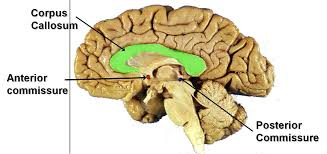 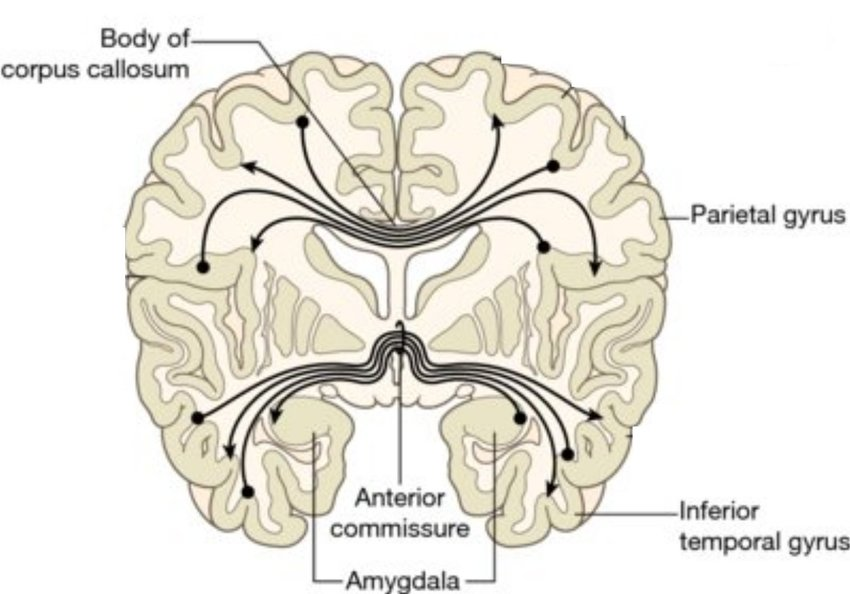Click
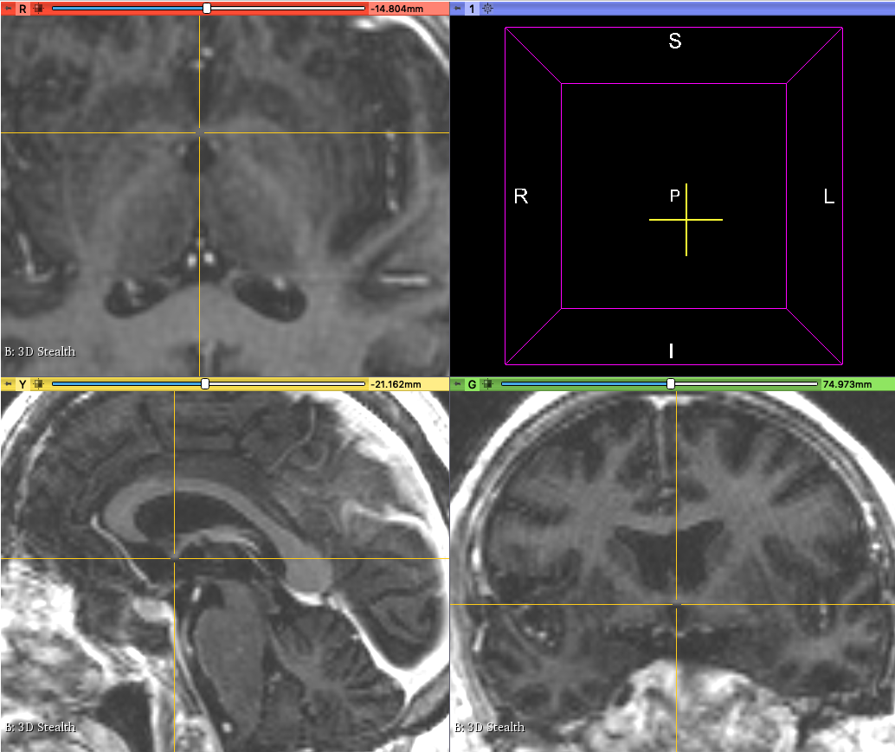Turn On Crosshairs. Holdshiftwhile moving your crusor to position your crosshair on the anterior commissure. As long as you mark the AC fiducial on one view, the it’ll be marked on the other views as well.Now add the AC point to our list of
Anatomical Fiducials.
Repeat these steps for PC, Mid1, and Mid2.
Posterior Commissure
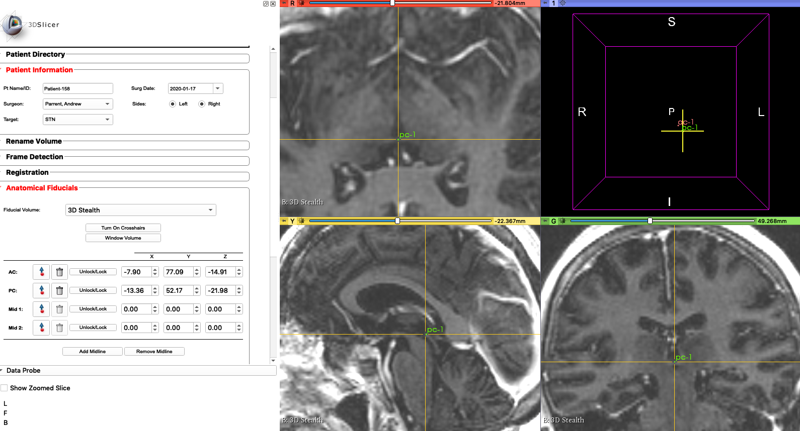Mid1
We can use the fourth ventricle.
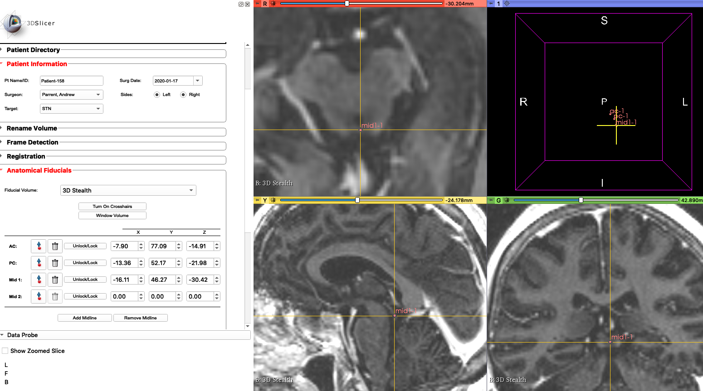Mid2
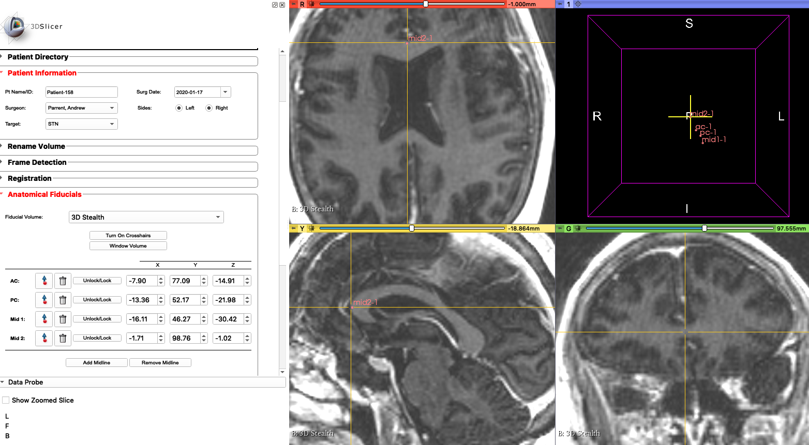Note
You may add more midlines (upto 5) if you would like to. Click
Add Midlineto add another one.Once done, click
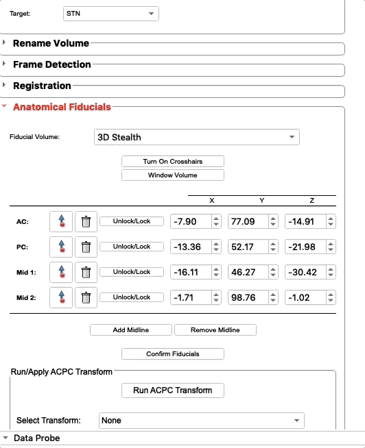Confirm Fiducials.A new fiducialMCP (Mid Commissure Point)will be added automatically based on yourACandPCfiducials.- Plan target trajectory.
Using the
Target Planningwidget, we will plan the trajectory of the micoelectrodes.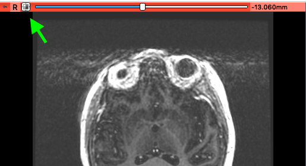Note
To center and zoom out of the scans, click on the square with four lines on the top left of each view’s menu bar.
Click
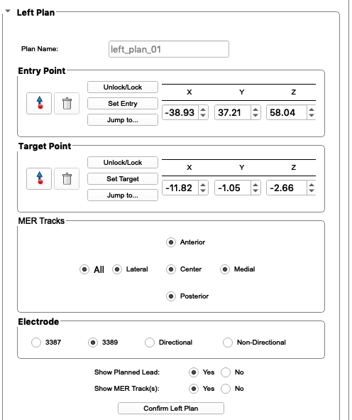Turn On Crosshairs. Below this button areX, Y, and Zcoordinates, relative toMCP. As you click on the scan the values update. If you have the planned coordinates from before, you can input them into these coordinates. In this example, the coordinates were already provided, so we input them into the appropriate boxes.Click
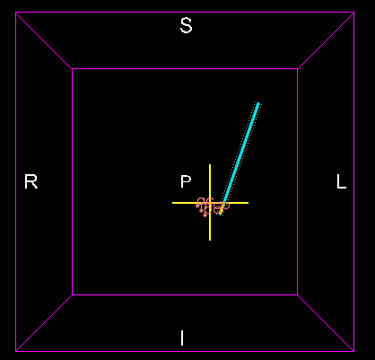Confirm Left Plan, and you will see an electrode plotted in 3D space.
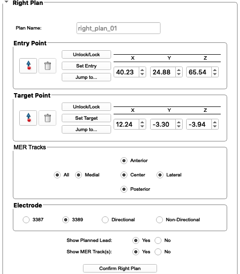Left Planis complete. We do not have any frame settings as the CT frame scan is taken on the day of surgery. Repeat these steps forRight Plan.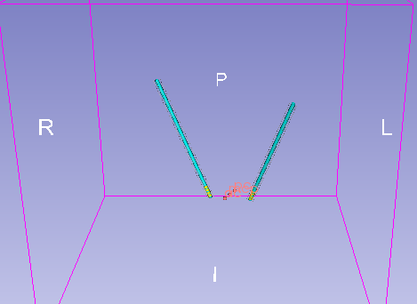View the scan on the 3D view with the electrodes:

Target planning is now complete! To look down the electrode and ensure you’re not hitting any unwanted tissue, use the
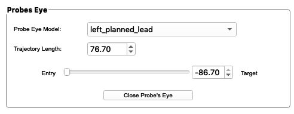Probes Eye. After selecting the left or right planned lead as yourProbe Eye Model, slide theEntryslider.
The preoperative phase of DBS Guide is complete! Moving onto the day of the surgery, visit Intraoperative Phase.